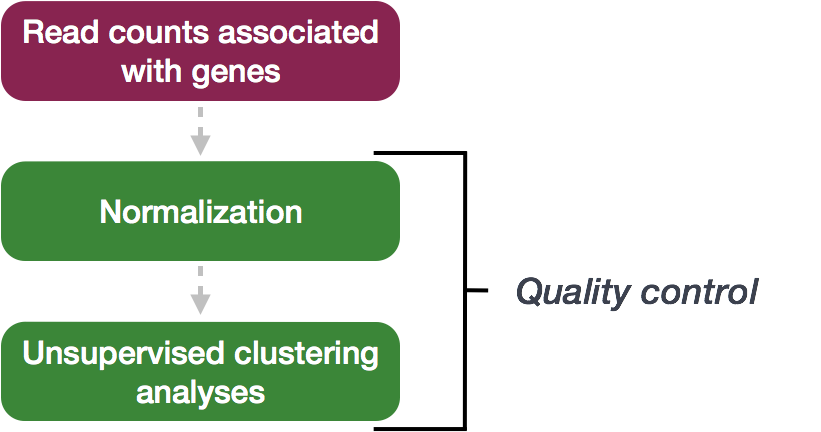
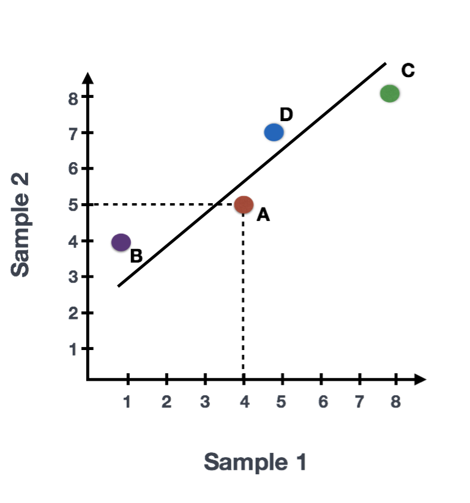
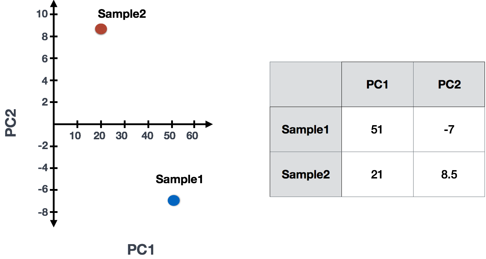
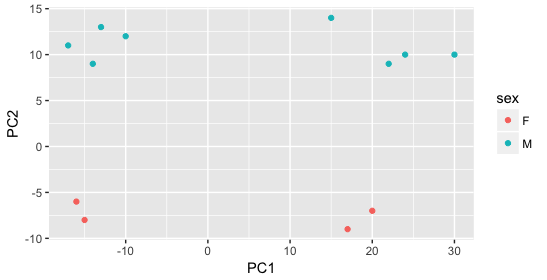
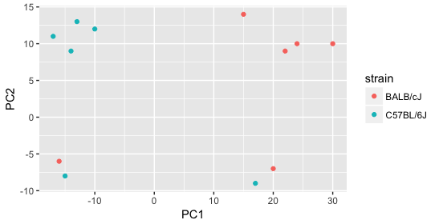
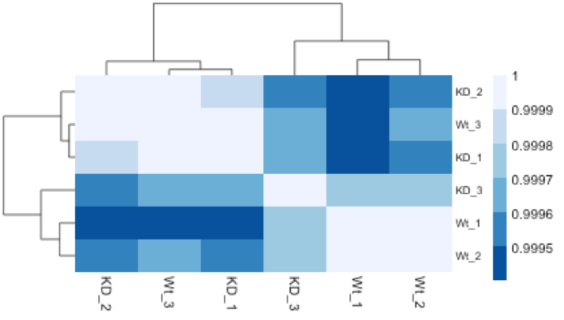

Chapter 3 Quality Control
The next step in the DESeq2 workflow is QC, which includes sample-level and gene-level steps to perform QC checks on the count data to help us ensure that the samples/replicates look good.

3.1 Sample-level QC
A useful initial step in an RNA-seq analysis is often to assess overall similarity between samples:
- Which samples are similar to each other, which are different?
- Does this fit to the expectation from the experiment’s design?
- What are the major sources of variation in the dataset?
To explore the similarity of our samples, we will be performing sample-level QC using Principal Component Analysis (PCA) and hierarchical clustering methods. Our sample-level QC allows us to see how well our replicates cluster together, as well as, observe whether our experimental condition represents the major source of variation in the data. Performing sample-level QC can also identify any sample outliers, which may need to be explored further to determine whether they need to be removed prior to DE analysis.

When using these unsupervised clustering methods, log2-transformation of the normalized counts improves the distances/clustering for visualization. DESeq2 uses a regularized log transform (rlog) of the normalized counts for sample-level QC as it moderates the variance across the mean, improving the clustering.

Principal Component Analysis (PCA) is a technique used to emphasize variation and highlight strong patterns in a dataset. It is particularly useful for dimensionality reduction, meaning it simplifies large datasets by identifying the directions (or principal components) that explain the greatest variation in the data. For a more detailed introduction to PCA, we recommend watching this StatQuest’s video.
Suppose we have a dataset with two samples and four genes. To evaluate the relationship between these samples, we can plot the counts of one sample against the other, with Sample 1 on the x-axis and Sample 2 on the y-axis, as shown below:

For PCA analysis, the first step is finding the first principal component (PC1). The first principal component is the direction that maximizes the variance (the sum of squared distances from the mean) and simultaneously minimizes the squared distances between the data points and their projections onto that line. Why? Because variance is essentially the spread (or squared distances) of the data from its mean, and PCA wants to capture as much of this spread as possible. In this example, the most variation is along the diagonal. That is, the largest spread in the data is between the two endpoints of this line. This is called the first principal component, or PC1. The genes at the endpoints of this line (Gene B and Gene C) have the greatest influence on the direction of this line.

After determining PC1, PCA assigns each sample a PC1 score, which represents how each sample aligns with this principal component. The score for each sample is calculated by taking the product of each gene’s influence on PC1 and its normalized expression in the sample, and summing these products across all genes. A second line can then be drawn to represent the second principal component (PC2), which captures the second-largest amount of variation in the data. This process can continue for additional principal components.
The formula to calculate a sample’s PC1 score is as follows:
\[ \text{Sample1 PC1 score} = \sum_{i=1}^{n} (\text{counts}_{i} \times \text{influence}_{i}) \]
Where:
\(\text{counts}_{i}\): Normalized expression of gene \(i\) in the sample
\(\text{influence}_{i}\): Influence of gene \(i\) on PC1
While calculating the influence of each gene on PC1 is complex, a key step involves calculating a z-score for each gene.
A z-score measures how far a gene’s expression deviates from the mean, and genes with larger z-scores (like Gene B and Gene C in this example) have a greater influence on PC1 because they contribute more to the variation.

Briefly, calculating PCA and the influence of each gene on PC1 involves the following steps:
3.1.0.1 Steps to calculate PCA
- Z-Scores:
- A z-score transforms the data points, indicating how far a value is from the mean in terms of standard deviations. This standardization adjusts for differences in scale between different genes, allowing for more accurate comparisons.
- The formula for calculating a z-score for a value \(x\) of a gene is:
\[ z = \frac{x - \mu}{\sigma} \]
Where:
\(\mu\) is the mean expression of the gene across samples.
\(\sigma\) is the standard deviation of the gene expression.
- Covariance matrix:
Covariance measures the degree to which two variables change together. In the context of PCA, we calculate the covariance matrix for standardized (z-scored) gene expressions to understand how genes vary together.
A positive covariance indicates that higher values of one gene correspond to higher values of another, while a negative covariance implies that higher values of one gene correspond to lower values of another.
After standardizing the data, calculate the covariance between the z-scores of different genes. This will produce a covariance matrix that reveals how gene expressions vary together.
In the context of Principal Component Analysis (PCA), the covariance matrix is a crucial component. It captures how variables in the dataset change with respect to one another and is used to determine the principal components.
- Eigenvectors and Eigenvalues: Find these from the covariance matrix. They reveal the directions (principal components) and their importance (variance explained) in the data. Think of PCA as creating new “axes” or dimensions that capture the most variation in the data. PCA will identify the direction of these axes based on the covariance of the standardized gene expressions that better highlight differences in your data.
The take-home message is that if two samples have similar levels of expression for the genes that contribute significantly to PC1, they will have similar PC1 scores and will be plotted close to each other on the PC1 axis. Therefore, we would expect biological replicates (samples from the same condition) to have similar PC1 scores and cluster together. On the other hand, samples from different treatment groups should have different PC1 scores, reflecting their distinct gene expression patterns. This is more easily understood through visualizing example PCA plots.
3.1.0.2 Interpreting PCA plots
In real datasets with many samples and genes, PCA reduces the complex, high-dimensional data into a 2-dimensional space, where each sample is represented by its scores for the principal components. Typically, we plot the first two principal components (PC1 and PC2), as they explain the most variation in the data.
When interpreting PCA plots, biological replicates (samples from the same condition) should cluster together because they have similar expression patterns for the genes driving variation in PC1. Samples from different treatment groups will often separate along these axes, reflecting differences in their gene expression profiles.
This is best understood by looking at example PCA plots, where you can visualize how biological replicates cluster and treatment groups separate based on their gene expression patterns.
3.1.0.3 Interpreting PCA plots example
We have an example dataset and a few associated PCA plots below to get a feel for how to interpret them. The metadata for the experiment is displayed below. The main condition of interest is treatment.

When visualizing the samples on PC1 and PC2, we can color the points based on different metadata columns to identify potential sources of variation. In the first plot, if we don’t observe a clear separation of samples by treatment, we can explore other factors that may explain the variation. Ideally, our metadata table includes all known sources of variation (such as batch effects, age, or gender), and we can use these factors to color the PCA plot to see if they explain any underlying patterns.

We begin by coloring the points in the PCA plot based on the cage factor, but this factor does not seem to explain the variation observed on PC1 or PC2.

Next, we color the points by the sex factor. Here, we observe that sex separates the samples along PC2, which is valuable information. We can use this in our model to account for variation due to sex and potentially regress it out to focus on other sources of variation.

Next we explore the strain factor and find that it explains the variation on PC1.

It’s great that we have been able to identify the sources of variation for both PC1 and PC2. By accounting for it in our model, we should be able to detect more genes differentially expressed due to treatment.
Worrisome about this plot is that we see two samples that do not cluster with the correct strain. This would indicate a likely sample swap and should be investigated to determine whether these samples are indeed the labeled strains. If we found there was a switch, we could swap the samples in the metadata. However, if we think they are labeled correctly or are unsure, we could just remove the samples from the dataset.
Still we haven’t found if treatment is a major source of variation after strain and sex. So, we explore PC3 and PC4 to see if treatment is driving the variation represented by either of these PCs.

We find that the samples separate by treatment on PC3, and are optimistic about our DE analysis since our condition of interest, treatment, is separating on PC3 and we can regress out the variation driving PC1 and PC2. Treatment separating on PC3 indicates that it still contributes to variation, but its effect is smaller and is only captured after accounting for the larger effects (strain, sex)..
me stop
Exercise points = +5
The figure below was generated from a time course experiment with sample groups ‘Ctrl’ and ‘Sci’ and the following timepoints: 0h, 2h, 8h, and 16h.

Determine the sources explaining the variation represented by PC1 and PC2.
- Ans:
Do the sample groups separate well?
- Ans:
Do the replicates cluster together for each sample group?
- Ans:
Are there any outliers in the data?
- Ans:
Should we have any other concerns regarding the samples in the dataset?
- Ans:
3.1.1 Recommended Resources
For further reading and visual examples of PCA, consider resources such as: - StatQuest’s PCA video (Link) - Online tutorials on PCA in bioinformatics.
3.1.2 Hierarchical Clustering Heatmap
Similar to PCA, hierarchical clustering is another, complementary method for identifying strong patterns in a dataset and potential outliers. The heatmap displays the correlation of gene expression for all pairwise combinations of samples in the dataset. Since the majority of genes are not differentially expressed, samples generally have high correlations with each other (values higher than 0.80). Samples below 0.80 may indicate an outlier in your data and/or sample contamination.
The hierarchical tree can indicate which samples are more similar to each other based on the normalized gene expression values. The color blocks indicate substructure in the data, and you would expect to see your replicates cluster together as a block for each sample group. Additionally, we expect to see samples clustered similar to the groupings observed in a PCA plot.
In the plot below, we would be quite concerned about ‘Wt_3’ and ‘KD_3’ samples not clustering with the other replicates. We would want to explore the PCA to see if we see the same clustering of samples.

3.2 Gene-level QC
In addition to examining how well the samples/replicates cluster together, there are a few more QC steps. Prior to differential expression analysis it is beneficial to omit genes that have little or no chance of being detected as differentially expressed. This will increase the power to detect differentially expressed genes. The genes omitted fall into three categories:
- Genes with zero counts in all samples
- Genes with an extreme count outlier
- Genes with a low mean normalized counts

DESeq2 will perform this filtering by default; however other DE tools, such as EdgeR will not. Filtering is a necessary step, especially when you are using methods other than DESeq2.
3.3 Mov10 quality assessment and exploratory analysis using DESeq2
Now that we have a good understanding of the QC steps normally employed for RNA-seq, let’s implement them for the Mov10 dataset we are going to be working with.
3.3.1 Transform normalized counts using the rlog transformation
To improve the distances/clustering for the PCA and heirarchical clustering visualization methods, we need to apply the regularized log transformation (rlog) transformation to the normalized counts. rlog is used for visualizations in RNA-Seq data analysis, particularly with tools like DESeq2, because it stabilizes the variance across different levels of gene expression, making it easier to interpret patterns in the data.
Example of Variance Stabilization Raw RNA-Seq count data has different levels of variability:
Without stabilization: Lowly expressed genes show high variability between samples (often due to noise), and highly expressed genes show less variability. With stabilization (e.g., rlog or vst): Variance across genes is more evenly distributed, which makes the data easier to work with in analyses like clustering or PCA.
The rlog transformation of the normalized counts is only necessary for these visualization methods during this quality assessment.
The blind=TRUE argument results in a transformation unbiased to sample condition information. When performing quality assessment, it is important to include this option. The DESeq2 vignette has more details.
The rlog function returns a DESeqTransform object, another type of DESeq-specific object. The reason you don’t just get a matrix of transformed values is because all of the parameters (i.e. size factors) that went into computing the rlog transform are stored in that object. We use this object to plot the PCA and heirarchical clustering figures for quality assessment.
3.3.2 Principal components analysis (PCA)
DESeq2 has a built-in function for plotting PCA plots, that uses ggplot2 under the hood. This is great because it saves us having to type out lines of code and having to fiddle with the different ggplot2 layers. In addition, it takes the rlog object as an input directly, hence saving us the trouble of extracting the relevant information from it.
The function plotPCA() requires two arguments as input: an rlog object and the intgroup (the column in our metadata that we are interested in).

What does this plot tell you about the similarity of samples? Does it fit the expectation from the experimental design? By default the function uses the top 500 most variable genes. You can change this by adding the ntop argument and specifying how many genes you want to use to draw the plot.
Resources are available to learn how to do more complex inquiries using the PCs.
3.3.3 Hierarchical Clustering
Since there is no built-in function for heatmaps in DESeq2 we will be using the pheatmap() function from the pheatmap package. This function requires a matrix/dataframe of numeric values as input, and so the first thing we need to is retrieve that information from the rld object:
### Extract the rlog matrix from the object
rld_mat <- assay(rld) ## assay() is function from the "SummarizedExperiment" package that was loaded when you loaded DESeq2Then we need to compute the pairwise correlation values for samples. We can do this using the cor() function:
### Compute pairwise correlation values
rld_cor <- cor(rld_mat) ## cor() is a base R function
head(rld_cor) ## check the output of cor(), make note of the rownames and colnames## Irrel_kd_1 Irrel_kd_2 Irrel_kd_3 Mov10_kd_2 Mov10_kd_3 Mov10_oe_1
## Irrel_kd_1 1.0000000 0.9999614 0.9999532 0.9997202 0.9997748 0.9996700
## Irrel_kd_2 0.9999614 1.0000000 0.9999544 0.9996918 0.9997568 0.9996984
## Irrel_kd_3 0.9999532 0.9999544 1.0000000 0.9996816 0.9997574 0.9997067
## Mov10_kd_2 0.9997202 0.9996918 0.9996816 1.0000000 0.9999492 0.9994868
## Mov10_kd_3 0.9997748 0.9997568 0.9997574 0.9999492 1.0000000 0.9996154
## Mov10_oe_1 0.9996700 0.9996984 0.9997067 0.9994868 0.9996154 1.0000000
## Mov10_oe_2 Mov10_oe_3
## Irrel_kd_1 0.9996599 0.9995804
## Irrel_kd_2 0.9996825 0.9996227
## Irrel_kd_3 0.9997090 0.9996026
## Mov10_kd_2 0.9994565 0.9993869
## Mov10_kd_3 0.9995905 0.9995235
## Mov10_oe_1 0.9999505 0.9999196And now to plot the correlation values as a heatmap:

Overall, we observe pretty high correlations across the board ( > 0.999) suggesting no outlying sample(s). Also, similar to the PCA plot you see the samples clustering together by sample group. Together, these plots suggest to us that the data are of good quality and we have the green light to proceed to differential expression analysis.
Exercise points = +3
The pheatmap function has a number of different arguments that we can alter from default values to enhance the aesthetics of the plot. Try adding the arguments color, border_color, fontsize_row, fontsize_col, show_rownames and show_colnames to your pheatmap. How does your plot change (plot shown below)? Take a look through the help pages (?pheatmap) and identify what each of the added arguments is contributing to the plot.
Pheatmap for exercise:
library(pheatmap)
library(RColorBrewer)
heat.colors <- colorRampPalette(brewer.pal(9, "Blues"))(100)
pheatmap(rld_cor, color = colorRampPalette(brewer.pal(9, "Blues"))(100))


# The color palette "Blues" is a good choice for this heatmap
heat.colors <- brewer.pal(9, "Blues")
# Your code here